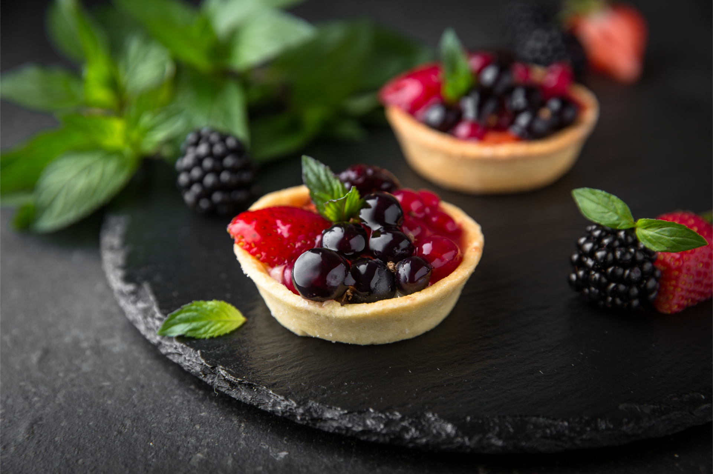
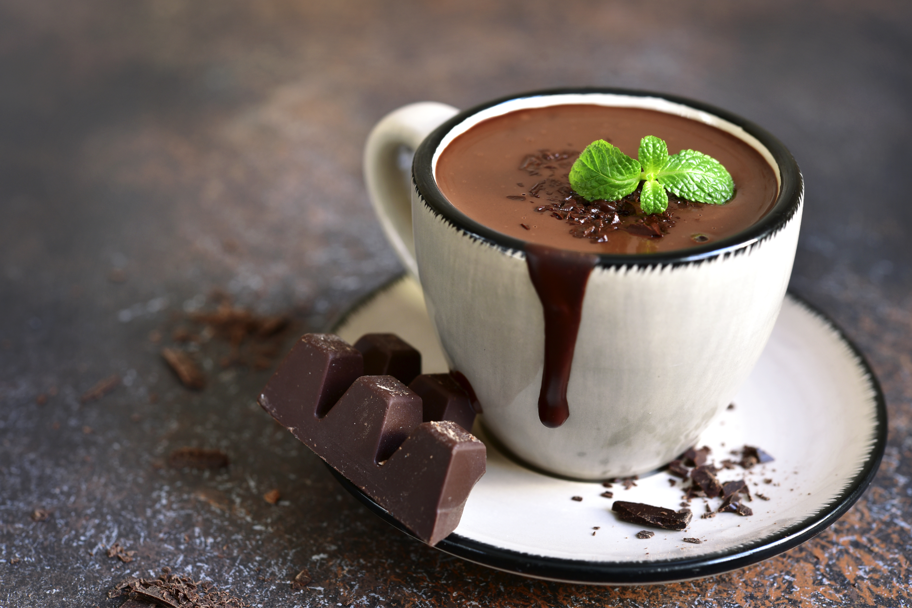
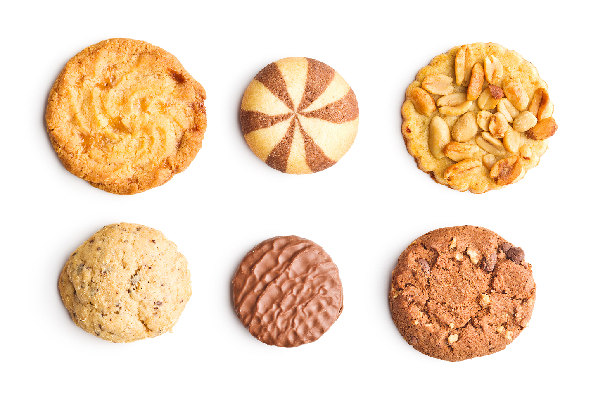
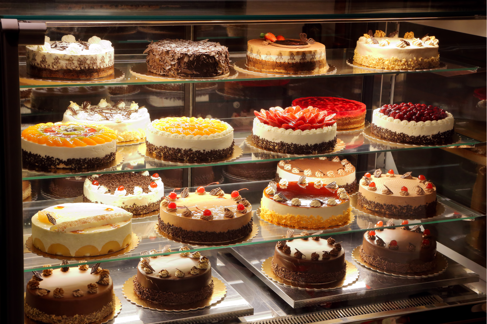

SEASONAL NOTES · 4 MIN READ
Why summer berries deserve the simplest table.
The pleasure of peak fruit, a crisp pastry shell and knowing when to leave a good thing alone.
Read the storyTHE Boojee JOURNAL
Small stories about seasonal ingredients, good coffee and the rituals that make a neighbourhood.

SEASONAL NOTES · 4 MIN READ
The pleasure of peak fruit, a crisp pastry shell and knowing when to leave a good thing alone.
Read the story


SEASONAL NOTES · 6 MIN READ
Three ways we turn orchard fruit into a warm afternoon ritual.
Read more
CAFE RITUALS · 4 MIN READ
Our counter team shares a few small habits worth keeping.
Read moreSTAY IN THE LOOP